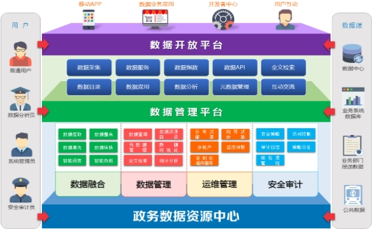

方案概述
SOLUTION OVERVIEW
近几年来，随着国家和地方政府不断出台大数据相关政策，大数据的应用和发展已经在逐步向前迈进。政府在大数据战略行动中不仅仅扮演着积极推动的角色，更为重要的是政府已成为大数据的采集、所有、应用和主管的主体。
开展大数据在电子政务领域的应用，将极大的改变政府的管理模式，有利于政府集约化建设、提高政府决策能力、提升公共服务和社会管理能力。
政务数据特点
Government Data Characteristics
分散化、增速快
各政府职能部门分管着方方面面的行业数据，相对分散，数据总量呈逐年指数级增长。
种类多、价值大
涵盖经济、交通、医疗、环境、教育、旅游等关键领域数据，具有极为重要的社会和经济价值。
垄断性、难获得
政府部门及公共企事业单位所采集数据通常来自于专营的业务，一般企业或个人无法得到。
政务大数据价值
Government Data Value
政府决策
基于精准的大数据分析和挖掘，分析决策的对错、决策的质量和实施的效率如何，让“数据”说话，以“数据”为依据，大数据的应用势必将改变未来政府的决策过程和结果。
社会管理
采用大数据技术开展数据驱动的社会管理，通过将政府职能程序化、标准化、数据化，把抽象的战略、决策，转化为具体的、明确的工作目标和考核标准，实现社会管理从粗放式向精细化的转变。
公共服务
通过政务大数据的分析，政府部门可以开展全面的专业化、多元化、个性化的惠民服务，解决群众最关心和最迫切的问题。更加准确了解和掌握社情及舆情，为政府能够快速地预见事物的发展态势及规律提供帮助。
共享开放
政务数据的开放应遵从“数据开放为原则、不开放为例外”，根除数据垄断，让政务数据来自社会，回馈社会，服务社会。“数据的价值产生于使用”，使用越多价值越大，政务数据开放给社会使用才能在最大的范围、产生最大的社会效益和经济效益。
解决方案
SOLUTION
我们的政务大数据平台采用的是“数据+服务+应用”的模式，结合新技术、新理念，挖掘数据中蕴藏的价值，将信息惠及更多民众。

政务大数据平台是由基础核心、数据融合、安全审计、数据管理和运维管理五部分组成。基础核心包含统一文件存储、统一资源调度和计算引擎(流式计算引擎、内存计算引擎)三大部分。